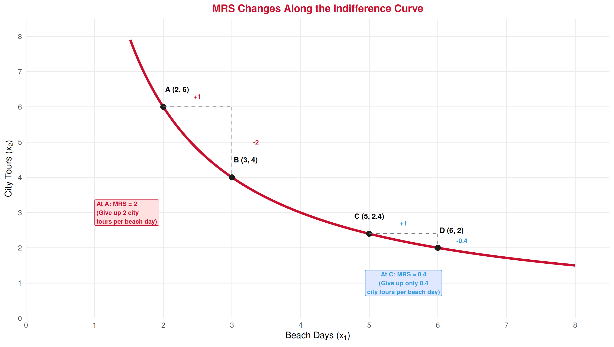
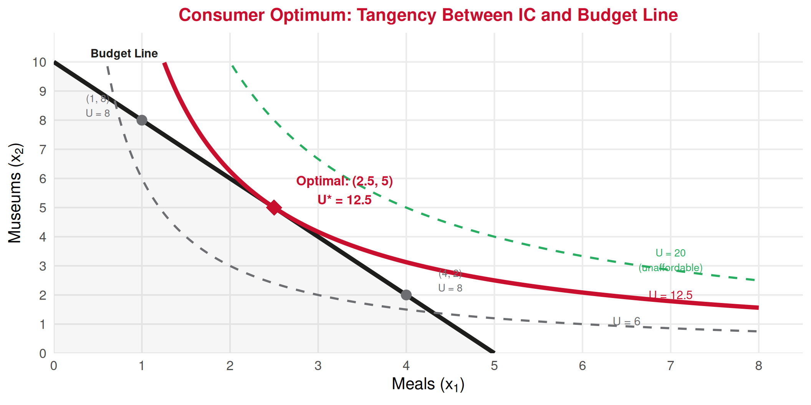
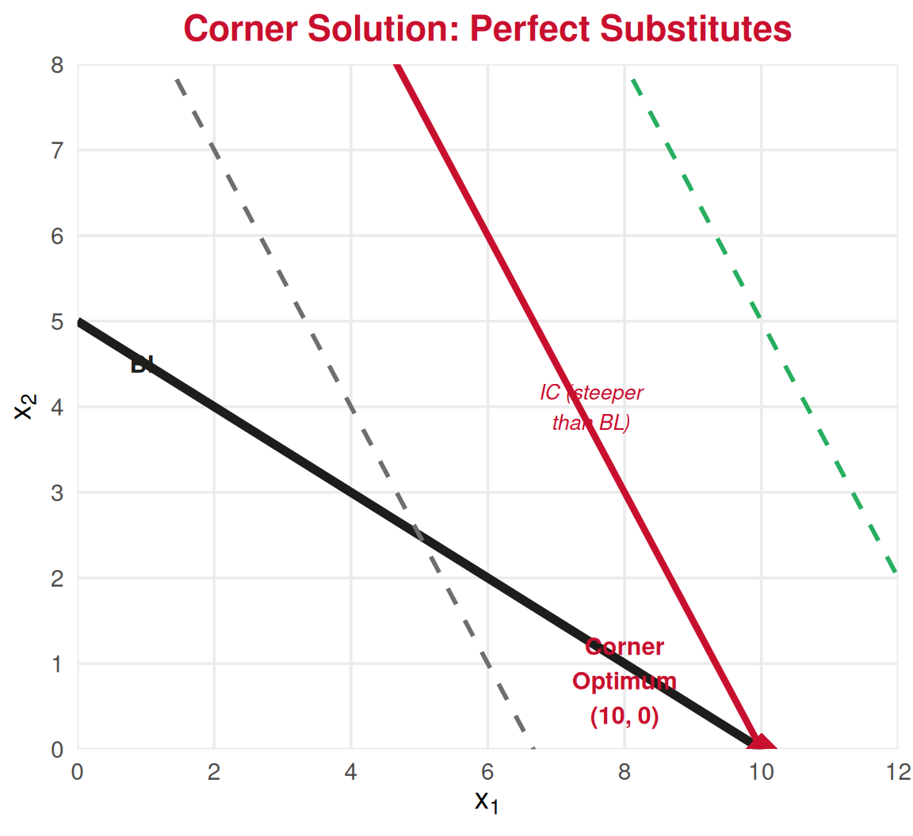
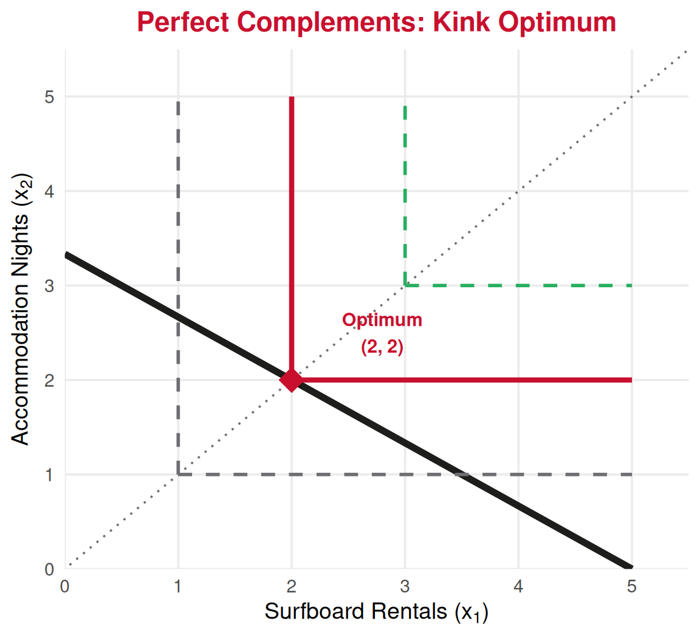

Economics Fundamentals
Lecture 7: Marginal Rate of Substitution, Utility Function, and Utility Maximization
Paulo Fagandini
2026
Recap: Building the Consumer Model
| Lecture | Question | Tool |
|---|---|---|
| 5 | What can the consumer afford? | Budget constraint: \(p_1 x_1 + p_2 x_2 \leq M\) |
| 6 | How does the consumer rank bundles? | Preferences, axioms, indifference curves |
| 7 | How does the consumer choose? | MRS, utility, optimization |
Today we put it all together! 🧩
Today’s Roadmap 🧭
Part 1 — Marginal Rate of Substitution
- Definition and intuition
- MRS along an indifference curve
- Diminishing MRS
Part 2 — Utility Functions
- From preferences to utility
- Marginal utility
- MRS = ratio of marginal utilities
Part 3 — Consumer’s Optimal Choice
- The tangency condition: \(MRS = \frac{p_1}{p_2}\)
- Graphical solution
- Algebraic solution (step by step)
Part 4 — Worked Examples
- Tourism applications
- Corner solutions
Part 1: The Marginal Rate of Substitution
MRS: The Intuition 🤔
We know from Lecture 6 that indifference curves are downward sloping — to stay equally happy, getting more of one good requires giving up some of the other.
The key question: How much of good 2 is the consumer willing to give up to get one more unit of good 1?
Marginal Rate of Substitution (MRS)
The MRS measures the rate at which a consumer is willing to trade good 2 for good 1 while remaining on the same indifference curve.
\[MRS = -\frac{\Delta x_2}{\Delta x_1} \bigg|_{\text{along IC}} = \text{slope of the IC (in absolute value)}\]
MRS: Tourism Example 🌴
Diminishing MRS 📉
Law of Diminishing MRS
As a consumer has more of good 1 and less of good 2, they are willing to give up less of good 2 for an additional unit of good 1.
Tourism intuition: Imagine you have 1 beach day and 8 city tours. You’d happily trade several city tours for another beach day.
But if you have 7 beach days and 1 city tour, you’d need a lot of beach days to compensate for losing that last city tour!
👉 This is what makes indifference curves convex (bowed toward the origin).
👉 Diminishing MRS reflects the idea that consumers prefer variety.
Part 2: Utility Functions
From Preferences to Utility 📊
In Lecture 6, we described preferences using the symbols \(\succ\), \(\sim\), \(\succsim\).
A utility function translates those preferences into numbers.
Utility Function
A function \(U(x_1, x_2)\) that assigns a number to each bundle such that:
\[A \succsim B \iff U(A) \geq U(B)\]
The consumer prefers the bundle with the higher utility number.
Important: Utility is ordinal, not cardinal. Only the ranking matters, not the size of the numbers. If \(U(A) = 10\) and \(U(B) = 5\), we know \(A \succ B\), but we cannot say “A is twice as good.”
Common Utility Functions ⚙️
| Utility Function | Formula | IC Shape | Example |
|---|---|---|---|
| Cobb-Douglas | \(U = x_1^a \cdot x_2^b\) | Standard (convex) | Beach days & city tours |
| Perfect Substitutes | \(U = ax_1 + bx_2\) | Straight lines | Two equivalent airlines |
| Perfect Complements | \(U = \min(ax_1, bx_2)\) | L-shaped | Surfboard + accommodation |
For this course, we will mostly work with Cobb-Douglas preferences.
Example: \(U(x_1, x_2) = x_1 \cdot x_2\)
| Bundle | \(x_1\) | \(x_2\) | \(U = x_1 \cdot x_2\) | Ranking |
|---|---|---|---|---|
| A | 2 | 6 | 12 | \(A \sim B\) |
| B | 3 | 4 | 12 | \(A \sim B\) |
| C | 4 | 5 | 20 | \(C \succ A\) |
Marginal Utility 🔬
Marginal Utility (MU)
The additional utility from consuming one more unit of a good, holding the other good constant.
\[MU_1 = \frac{\partial U}{\partial x_1} \qquad MU_2 = \frac{\partial U}{\partial x_2}\]
Example: For \(U(x_1, x_2) = \sqrt{x_1 \cdot x_2}\):
\[MU_1 = \frac{\partial (\sqrt{x_1 \cdot x_2})}{\partial x_1} = \frac{1}{2}\sqrt{\frac{x_2}{x_1}} \qquad MU_2 = \frac{\partial (\sqrt{x_1 \cdot x_2})}{\partial x_2} = \frac{1}{2}\sqrt{\frac{x_1}{x_2}}\]
👉 Diminishing marginal utility: As you consume more of a good, each additional unit adds less satisfaction (same idea from the ice cream cone example in the Lecture Notes availabe in Canvas.).
The Key Link: MRS = Ratio of Marginal Utilities 🔑
There is a powerful connection between the MRS (from indifference curves) and marginal utilities (from the utility function):
MRS and Marginal Utility
\[MRS = \frac{MU_1}{MU_2}\]
The MRS equals the ratio of marginal utilities of the two goods.
Intuition: If good 1 gives you a lot of extra utility (\(MU_1\) is high) and good 2 gives you little (\(MU_2\) is low), you are willing to give up a lot of good 2 for one more unit of good 1 — so MRS is high.
Example: For \(U = x_1 \cdot x_2\) at bundle \((2, 6)\):
\[MRS = \frac{MU_1}{MU_2} = \frac{x_2}{x_1} = \frac{6}{2} = 3\]
👉 The consumer would give up 3 units of good 2 for 1 more unit of good 1.
Why Does MRS = \(MU_1 / MU_2\)? 💡
Derivation (along an indifference curve, utility stays constant):
\[dU = 0\]
\[\frac{\partial U}{\partial x_1} dx_1 + \frac{\partial U}{\partial x_2} dx_2 = 0\]
\[MU_1 \cdot dx_1 + MU_2 \cdot dx_2 = 0\]
Rearranging:
\[-\frac{dx_2}{dx_1} = \frac{MU_1}{MU_2}\]
\[\boxed{MRS = \frac{MU_1}{MU_2}}\]
👉 This formula lets us compute the MRS directly from the utility function — no graph needed!
Part 3: The Consumer’s Optimal Choice
The Consumer’s Problem 🎯
Now we can put everything together:
The Consumer’s Problem
Maximize utility subject to the budget constraint:
\[\max_{x_1, x_2} \; U(x_1, x_2) \quad \text{subject to} \quad p_1 x_1 + p_2 x_2 = M\]
In words: Choose the bundle on the highest possible indifference curve that is still affordable (on or below the budget line).
Since more is better (non-satiation), the consumer will always spend all income ➡️ the optimal bundle is on the budget line.
Graphical Solution: Tangency 🎨

The Tangency Condition 📏
At the optimum, the slope of the IC equals the slope of the budget line:
Optimality Condition (Interior Solution)
\[MRS = \frac{p_1}{p_2}\]
\[\frac{MU_1}{MU_2} = \frac{p_1}{p_2}\]
Or equivalently:
\[\frac{MU_1}{p_1} = \frac{MU_2}{p_2}\]
Interpretation of \(\frac{MU_1}{p_1} = \frac{MU_2}{p_2}\): The marginal utility per euro spent must be equal for both goods. If it is not, the consumer can improve by reallocating spending.
Why Must MRS = Price Ratio? 💡
If MRS > \(p_1/p_2\) ➡️
The consumer values good 1 more than the market does.
The consumer should buy more of good 1 and less of good 2.
This moves them down along the budget line, increasing utility.
If MRS < \(p_1/p_2\) ⬅️
The consumer values good 1 less than the market does.
The consumer should buy less of good 1 and more of good 2.
This moves them up along the budget line, increasing utility.
Only when MRS = \(p_1/p_2\) is there no room for improvement — the consumer is at the optimum!
Analogy from Lecture 3: This is exactly the cost-benefit principle applied to marginal reallocation of spending.
Solving Algebraically: Step by Step 🧮
The method (2 equations, 2 unknowns):
Equation 1 — Tangency condition:
\[MRS = \frac{p_1}{p_2} \implies \frac{MU_1}{MU_2} = \frac{p_1}{p_2}\]
Equation 2 — Budget constraint:
\[p_1 x_1 + p_2 x_2 = M\]
Steps:
1️⃣ Compute \(MU_1\) and \(MU_2\) from the utility function
2️⃣ Set \(MRS = p_1 / p_2\) and solve for \(x_2\) in terms of \(x_1\) (or vice versa)
3️⃣ Substitute into the budget constraint
4️⃣ Solve for \(x_1^*\) and \(x_2^*\)
Worked Example: Tourist in Lisbon 🇵🇹
Problem: \(U(x_1, x_2) = x_1 \cdot x_2\), with \(p_1 = 20\), \(p_2 = 10\), \(M = 100\).
Step 1: Marginal utilities
\[MU_1 = \frac{\partial(x_1 x_2)}{\partial x_1} = x_2 \qquad MU_2 = \frac{\partial(x_1 x_2)}{\partial x_2} = x_1\]
Step 2: Tangency condition
\[\frac{MU_1}{MU_2} = \frac{p_1}{p_2} \implies \frac{x_2}{x_1} = \frac{20}{10} = 2 \implies x_2 = 2x_1\]
Step 3: Substitute into budget constraint
\[20 x_1 + 10(2x_1) = 100 \implies 20x_1 + 20x_1 = 100 \implies 40x_1 = 100\]
Step 4: Solve
\[\boxed{x_1^* = 2.5 \text{ meals}} \qquad x_2^* = 2(2.5) = \boxed{5 \text{ museums}}\]
\[U^* = 2.5 \times 5 = 12.5\]
Verifying: \(MU_1/p_1 = MU_2/p_2\) ✅
At the optimum \((x_1^*, x_2^*) = (2.5, 5)\):
\[\frac{MU_1}{p_1} = \frac{x_2}{p_1} = \frac{5}{20} = 0.25 \text{ utils per euro}\]
\[\frac{MU_2}{p_2} = \frac{x_1}{p_2} = \frac{2.5}{10} = 0.25 \text{ utils per euro}\]
✅ Equal! The last euro spent on meals gives the same additional satisfaction as the last euro spent on museums.
👉 If \(MU_1/p_1 > MU_2/p_2\), the consumer should shift spending toward good 1 (meals give more “bang for the buck”).
👉 If \(MU_1/p_1 < MU_2/p_2\), shift toward good 2.
Another Example: Cobb-Douglas \(U = x_1^{0.4} x_2^{0.6}\) ✏️
Problem: \(p_1 = 5\), \(p_2 = 10\), \(M = 200\).
Step 1: \(MU_1 = 0.4 \cdot x_1^{-0.6} \cdot x_2^{0.6} \qquad MU_2 = 0.6 \cdot x_1^{0.4} \cdot x_2^{-0.4}\)
Step 2: Tangency
\[\frac{MU_1}{MU_2} = \frac{0.4 \, x_2^{0.6} \, x_1^{-0.6}}{0.6 \, x_1^{0.4} \, x_2^{-0.4}} = \frac{0.4}{0.6} \cdot \frac{x_2}{x_1} = \frac{2}{3} \cdot \frac{x_2}{x_1}\]
Setting equal to \(p_1/p_2 = 5/10 = 1/2\):
\[\frac{2}{3} \cdot \frac{x_2}{x_1} = \frac{1}{2} \implies x_2 = \frac{3}{4} x_1\]
Step 3: Budget constraint: \(5x_1 + 10 \left(\frac{3}{4}x_1\right) = 200 \implies 5x_1 + 7.5x_1 = 200 \implies 12.5x_1 = 200\)
Step 4: \(\boxed{x_1^* = 16} \qquad x_2^* = \frac{3}{4}(16) = \boxed{12}\)
💡 Shortcut for Cobb-Douglas \(U = x_1^a x_2^b\): spend fraction \(\frac{a}{a+b}\) of income on good 1, and \(\frac{b}{a+b}\) on good 2!
The Cobb-Douglas Shortcut 🚀
Cobb-Douglas Demand Shortcut
For \(U = x_1^a \cdot x_2^b\), the optimal demands are:
\[x_1^* = \frac{a}{a + b} \cdot \frac{M}{p_1} \qquad x_2^* = \frac{b}{a + b} \cdot \frac{M}{p_2}\]
Verify with our previous example: \(a = 0.4\), \(b = 0.6\), \(M = 200\), \(p_1 = 5\), \(p_2 = 10\)
\[x_1^* = \frac{0.4}{1} \cdot \frac{200}{5} = 0.4 \times 40 = 16 \quad \checkmark\]
\[x_2^* = \frac{0.6}{1} \cdot \frac{200}{10} = 0.6 \times 20 = 12 \quad \checkmark\]
👉 This shortcut works for any Cobb-Douglas utility. The exponents determine budget shares.
Part 4: Special Cases and Intuition
Corner Solutions 🚩
The tangency condition gives interior solutions (positive amounts of both goods).
Sometimes the optimum is at a corner — the consumer buys only one good.
This happens with perfect substitutes when \(MRS \neq p_1/p_2\) everywhere.
Rule for perfect substitutes \(U = ax_1 + bx_2\):
- If \(\frac{a}{b} > \frac{p_1}{p_2}\): buy only good 1
- If \(\frac{a}{b} < \frac{p_1}{p_2}\): buy only good 2
- If \(\frac{a}{b} = \frac{p_1}{p_2}\): any bundle on BL is optimal

Perfect Complements: Optimum at the Kink 🧩
For perfect complements \(U = \min(ax_1, bx_2)\):
No tangency exists (the IC has a kink!). The optimum is always at the corner of the L.
Condition: \(ax_1 = bx_2\)
Substitute into the budget constraint:
\[p_1 x_1 + p_2 \left(\frac{a}{b} x_1\right) = M\]
Example: “Surf & Stay” package, \(U = \min(x_1, x_2)\), \(p_1 = 40\), \(p_2 = 60\), \(M = 200\):
\[40 x_1 + 60 x_1 = 200\] \[x_1^* = x_2^* = 2\]

Summary of the Consumer’s Solution 📋
| Preference Type | Utility Function | Solution Method | Optimal Condition |
|---|---|---|---|
| Standard (Cobb-Douglas) | \(x_1^a x_2^b\) | Tangency + Budget | \(MRS = p_1/p_2\) |
| Perfect Substitutes | \(ax_1 + bx_2\) | Compare \(\frac{a}{b}\) vs \(\frac{p_1}{p_2}\) | Corner or entire BL |
| Perfect Complements | \(\min(ax_1, bx_2)\) | Kink + Budget | \(ax_1 = bx_2\) |
The Consumer’s Optimal Choice — Master Summary
1️⃣ Write the utility function and compute \(MU_1\), \(MU_2\)
2️⃣ Set \(\frac{MU_1}{MU_2} = \frac{p_1}{p_2}\) (tangency)
3️⃣ Combine with \(p_1 x_1 + p_2 x_2 = M\) (budget)
4️⃣ Solve the system for \(x_1^*\) and \(x_2^*\)
Summary: Today’s Key Takeaways
1️⃣ MRS = rate at which the consumer trades good 2 for good 1 along an IC
2️⃣ Diminishing MRS ➡️ indifference curves are convex ➡️ consumers prefer variety
3️⃣ Utility functions assign numbers to bundles; \(MRS = MU_1/MU_2\)
4️⃣ Optimal choice: highest IC touching the budget line ➡️ tangency condition \(MRS = p_1/p_2\)
5️⃣ Equivalent condition: \(MU_1/p_1 = MU_2/p_2\) (equal marginal utility per euro)
6️⃣ Cobb-Douglas shortcut: spend fraction \(a/(a+b)\) on good 1
Next lecture: Lecture 8 — From individual demand to market demand and linear demand curves.
Exercises
Application Time! ✏️
MRS, utility maximization, and graphical analysis.
Exercise 1: Multiple Choice
Question: A consumer has utility \(U = x_1 \cdot x_2\) and currently consumes the bundle \((4, 8)\). The MRS at this point is:
A. 32
B. 4
C. 2
D. 0.5
Answer: C — MRS = 2
\(MRS = \frac{MU_1}{MU_2} = \frac{x_2}{x_1} = \frac{8}{4} = 2\). The consumer is willing to give up 2 units of good 2 for 1 additional unit of good 1.
Exercise 2: Multiple Choice
Question: At the optimal bundle, if \(MU_1/p_1 > MU_2/p_2\), the consumer should:
A. Buy more of good 1 and less of good 2
B. Stay at the current bundle — it is already optimal
C. Buy more of good 2 and less of good 1
D. Increase total spending
Answer: A — Buy more of good 1 and less of good 2
If \(MU_1/p_1 > MU_2/p_2\), the last euro spent on good 1 gives more satisfaction than the last euro on good 2. Shifting spending toward good 1 increases total utility. The consumer continues until \(MU_1/p_1 = MU_2/p_2\).
Exercise 3: Open Question
A tourist in the Algarve has a daily budget of €120 to split between boat tours (\(x_1\), price €30 each) and restaurant meals (\(x_2\), price €20 each). Their utility function is \(U(x_1, x_2) = x_1^{0.5} \cdot x_2^{0.5}\).
Write the budget constraint equation and find the intercepts.
Compute \(MU_1\) and \(MU_2\). Derive the MRS.
Using the tangency condition (\(MRS = p_1/p_2\)) and the budget constraint, find the optimal bundle \((x_1^*, x_2^*)\).
Verify your answer using the Cobb-Douglas shortcut (\(a = b = 0.5\)).
Compute the utility at the optimum. Now suppose the tourist’s budget increases to €180 (everything else unchanged). Find the new optimal bundle and new utility. By what percentage did utility increase?
Hint: For part (b), recall that the partial derivative of \(x^{0.5}\) is \(0.5 x^{-0.5}\). For part (d), the Cobb-Douglas shortcut says spend fraction \(\frac{a}{a+b}\) on each good.
Exercise 3: Solution
\(30 x_1+20 x_2 = 120\), \(x_2= 6 - 1.5 x_1\). When \(x_1=0\), \(x_2=6\), when \(x_2=0\), \(x_1=4\).
\(MU_1=\frac{1}{2}\sqrt{x_2/x_1}\), \(MU_2=\frac{1}{2}\sqrt{x_1/x_2}\), \(MRS=x_2/x_1\)
\((x_1^*,x_2^*)=(2,3)\)
✅
\(u(2,3)=\sqrt{2\cdot 3}=\sqrt{6}\approx 2.45\). If \(M=180\), \((x_1^*,x_2^*)=(3,4.5)\), \(u(3,4.5)=\sqrt{3\cdot 4.5}=\sqrt{13.5}\approx 3.67\). The utility increased \(\frac{3.67}{2.45}\approx 1.5\), that is about 50%.
Next Lecture
February 27, 2026: Demand — Individual and Market Demand, Linear Demands
Thank You!
Questions?
Contact: paulo.fagandini@ext.universidadeeuropeia.pt
Next class: Friday, February 27, 2026

Economics of Tourism | Lecture 7